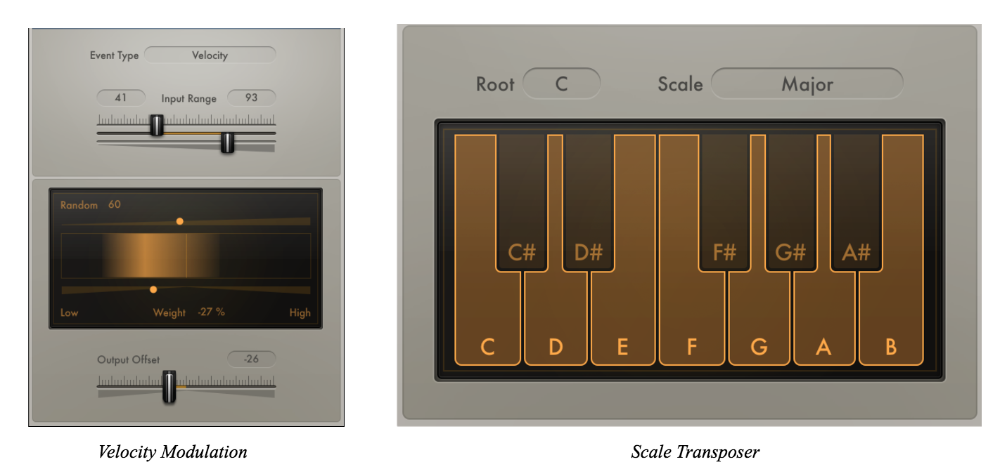

Automated Music Generator using Recurrent Neural Network
EECS 349 Final Project Ben Krege, Victor Lalo, and Robert Belson
JohnKrege2018@u.northwestern.edu
VictorLalo2017@u.northwestern.edu
RobertBelson2019@u.northwestern.edu
Our task is to create a machine composer that learn composer and genre style, and produce original work in that style. This task is important because we can experiment with different genres or mixes of input data to create new styles and compositions that can inspire our own work, or possibly be quality compositions in their own right. Bach was only able to write 500 chorals in his lifetime. Wouldn’t it be great if we could do this in an hour? Furthermore, by interacting with a machine composer, writers can be provided material and inspiration for their work.
Using Daniel Johnson's Biaxial Long Short-Term Memory Biaxial Recurrent Neural Network, we generated new compositions of music in a variety of styles, from Classical (e.g., music in the style of Fredyryk Chopin) to Classic Rock (e.g., Music in the style of beatles). This neural network learner's strengths included high quality outputs – as music was aesthetically pleasing and aurally resembled the genre of the training set – and comprehensive feature set, as pattern recognition, meter, pitch-class were some of the features used. Given the complexity of the learner required to perform automated music composition coupled with an in-depth analysis of Daniel Johnson's algorithm itself, we concluded that a neural network is the only learner capable of producing meaningful outputs in this discipline. Furthermore, in experimenting with hyperparamter adjustment – such as dropout and temeprature – we determined that the adjustments that led to the most aurally recognizable changes resided in adjusting the number of nodes of hidden layers across the time and note axes.
Our Architecture: Daniel Johnson's Biaxial Long Short-Term Memory Recurrent Neural Network
After just ~12 hours of training, producing a new piece takes just a matter of minutes.
Endless, Recyclable Music Composition
Using AWS to optimize performance, as the RNN was designed for GPUs, we queued up a variety of compositions over the course of a few weeks.
Our Data (MIDI Files)
We have found numerous online MIDI libraries with raw data from a multitude of styles and composers. So far, we have used a dataset of a variety of works by Bach (chorales, fugues, variations, etc.) of size ~1.2MB (Complete Bach Midi Index from bachcentral.com). The 5 features include input position, pitch class, previous vicinity, previous context, and beat. As for examples, the examples are essential the repertoire itself, in which we will run out model on held out test data. Of the 1.2MB dataset we chose, all of it will be used for development/training, as a smaller partition may lead to an insufficient amount of data for automated music composition.
Breadth of Project
Unlike Daniel Johnson, we sought to apply his neural network across a variety of styles, comparing its capcity to produce aurally compelling music. Beginning first with the classical genre, drawing from the compositions of Bach and Chopin, we then explored other genres such as classical rock, pop, and electronic and house music.
How does the Biaxial Recurrent Neural Network Work?
Drawing from some concepts of convolution neural networks (applying the same invarient network on each time step)coupled with long short-term memory layers, our recurrent neural network learns to predict which notes will be played (among other paramters such as duration) at each time step (1/16th notes) of a piece.
In basic recurrent neural networks, each output of a particular hidden layer, beyond the weighted sum of the inputs, is computed and fed back to itself, and other nodes in that "column," as an additional input in the next time step. Thus, each node of a hidden layer is derived by the outputs of the current layer and the inputs of the previous layer, as seen in the figure below:
For the network to have short-term-memory, an output needs to be an input in the next time step. Long Short-Term Memory (LSTM) nodes includes a saved value that is included in each node's calculations. This value can be modified (e.g., addeded, subtracted, etc.) at each time step.
For this neural network adapted specifically to generate pieces of music, unique properties of this network included:
Note and Time Invariance: For the generated music to be transposable and composed to an indefinite length, the network was constructed to be identical for each note and time step (time+note invarient)
Vertical and Horizontal Motion: Network supports polyphonic music, with multiple notes at a given time step
Repetition as Integral Compositional Element: Western music is repetitive. Thus, the network must allow repetition of the same note. The uniqueness of this network is that it has an encoding for a note to be held. This contrasts some previous machine composer designs that did not distinguish between a held note and a repeated note.
However, to integrate pattern recognition over time (an integral component to constructing aurally). Coined as "Biaxial RNN" by Daniel Johnson, the network has time axis and note axis, connecting inputs to outputs and recurrent connections from one axis to another.
REWRITE
The first two layers default to 300 nodes each and feed back via the RNN through the time axis. The third and fourth timesteps are 200 and 50, respectively. feed back into themselves to give an awareness of harmony.
Deep Dive into Our Biaxial Recurrent Neural Network
For each time step we have the following paramters to our input vector:
Position: Current pitch of a particular note, ranging from 0-127 (MIDI note value)
Pitchlass: Consisting of 12 values, one per pitchclass, incrementing by 1 for each value (A will be 0, A# will be 1.... G# will be 11). In this assumption, Johnson posits that this will allow selection of "more common chords." However, this assumption is incredibly naive, given his assertion that is is necessarily "more common to have a C major chord than E-flat major chord." In certain iterations of our model, we adjusted this paramter to reflect a different weighting of commonality of various chords.
Previous Vicinity: Consisting of 50 values, or rather 3 octaves span of 12 pitch classes, each value is given a 1 if that pitch was present in the last timestep and a zero otherwise.
Previous Context: Similar to Previous Vicinity paramter, but condensed to 1 octave, number of times a certain pitch class was played across any octave is reported across the 12 values.
Beat: Using a 4 row binary representation, one for each beat of the 4/4 time signature, each 1 represents the "note-on" MIDI property for each timestep.
Now, to break down the two LSTM stacks:
First Hidden LSTM Stack: LSTMs that have reccurent connections along time axis, where the last layer outputs a note state representing any particular time pattern
Second Hidden LSTM Stack: LSTMs that have recurrent connections along note axis, whos last layer outputs 2 values. The first value, Play Probability, indicates the probability that a particular note should be chosen to be played. The second value, Articulate Probability (applies only for notes that have already been played in prior time step), is probability the note should last longer, say, from a sixteenth note to an eighth note.
Model Software Implementation
Having studied a variety of machine learning software this quarter, the biaxial network uses Theano, a python library developed by computer scientists at Université de Montréal. This software compiles the network to run most efficiently by making the code GPU-optimized.
Training Process Stepwise Process:
Randomly select batch of short music segments from our dataset, and feed into biaxial RNN
Take output probabilities from second hidden LSTM stack, and calculate cross-entropy (i.e., likelihood of generating particular output)
Take probabilities and use optimizer (AdaDelta) to calculate weights
Batch all notes together and train time-axis layers
Do the reverse: batch all times together and train the note-axis layers
Avoiding Overfitting: Hyperparameter Adjustments
Applying dropout to our RNN is a way of removing hidden nodes (by zeroing output) at each layer at random, as a means to avoid overfitting and in turn promote specializing, or rather "unique" music composition.
*Note: We would expect temperature adjustments to behave in a similar way. If temperature was excessively low, the distribution would be less uniform, and the composition would be extremely repetitive. On the other hand, as the temperature grows increasingly high, the the distribution would be more uniform, leading to increasingly less-similar but less coherent (in terms of aurally compelling "reproductions" of a given dataset).
Project Report
From Google’s Magenta and Wavenet, to Stanford University's GRUV or Cambridge University’s BachBot, the plethora of deep learning software for music generation available today share one thing in common – its use of neural networks. One of the most compelling elements of a piece in music is the series of relationships constructed across the piece from note-to-note, harmony-to-harmony, or even larger macrostructural relationships. These relationships – and its resulting patterns and repetition – are essential to music composition, and neural networks are thus the most natural choice for a learner. In conducting this project, we looked for a series of other techniques we could use to generate music. One of the leading alternatives we considered was using a decision tree: in segmenting a dataset of thousands of harmonic progressions sorted in a CSV, a probabilistic model would help generate a new series of harmonies – and upon generating the new harmonic progression, we would use Python’s MIDI package to generate these harmonies. While this would have been a successful project, the generated harmonies would have no way to morph into a more elaborate piece of music. With neural networks, computation was done at the level of each individual notes, leading to a much wider range of compositions. Thus, we chose neural networks as our backend architecture for the project.
For each output generated (see below), each training set was composed a series of MIDI files in that style or genre. For example, in our Bach dataset, we had approximately 1.2MB of a variety of Bach selections, from fugues to chorales. The specific features of our data, outlined in our “How does the Biaxial Recurrent Neural Network Work?” section above, is composed of:
1. Pitch class:Current pitch of a particular note, ranging from the MIDI note values 0-127)
2. Previous vicinity: A set of 50 values, representing the three nearest octaves of pitches, where each value is given a 1 if that pitch was present in the last timestep and a zero otherwise
3. Previous Context: Similar to Previous Vicinity parameter, but condensed to 1 octave, number of times a certain pitch class was played across any octave is reported across the 12 values
4. Beat: Using a 4 row binary representation, one for each beat of the 4/4 time signature, each 1 represents the "note-on" MIDI property for each timestep.
The Datasets
We used four datasets for our project. Each set contained between 1 and 2 MB of data.
Bach 1.0: Our First Bach Dataset: In this dataset, we used approximately ~1.2MB of a variety of Bach selections, from fugues to chorales. Characteristics of this dataset include standard harmonic progressions of Western Tonal music (i.e., what is often referred to as “progressive harmony”), multiple independent voices, and modulations to closely related keys (e.g., C Major to G Major). The MIDI was represented in multi-track form, and the RNN tried to reconcile chord structures and melodies across tracks, a feat significantly more challenging than if all tracks (voices) were condensed into one. As a result, the output resulted in a fugue-esque composition, with two independent melodic lines at a particularly slow tempo in C Major. Especially after hearing the audio output, this led us to conclude that a relative weakness of Daniel Johnson’s algorithm was multitrack MIDI. In future iterations (i.e., Bach 2.0), we used single-track MIDI.
Bach 2.0: More Comprehensive Bach Dataset: As expected, this dataset ran significantly better than our first Bach dataset. This was due to changing the MIDI Format (see MIDI Formatting section) from 1 to 0, as well as almost doubling the amount of training examples given. We ran 153 Bach compositions, with MIDI note counts ranging from 312 notes to 2,930 notes, averaging at around 1,044 notes per file. As a result, the composition features a clear melodic line with a supporting accompaniment figure in Eb Major. This significantly more harmonically nuanced composition supported our earlier hypothesis that the RNN architecture prefers single track MIDI.
The perplexity and error of the final training epoch was:
epoch 9900, minute 24939121.4239, error=2092.07885742, perplexity=0.000772314505144
Chopin Dataset: We ran 95 Chopin compositions, with MIDI note counts ranging from 675 notes to 4,827 notes, averaging at around 1,662 notes per file. Inspired by Polish folk tunes, characteristic of Chopin compositions was melodic ornamentation, increasingly complex modulations, and more liberal tempos. In the Chopin output, the output resembled many of his nocturnes, with a slightly syncopated rhythm in Eb Major. While the composition was by no means a “perfect replica” of a Chopin composition, many of Chopin’s idiosyncratic compositional elements (i.e., chromatic passing tones in melodic line, general tonal areas that were less likely to be in C Major) were certainly present.
The perplexity and error of the final training epoch was:
epoch 9800, minute 24940234.9389, error=3977.01831055, perplexity=0.000845743685353
Beatles Dataset: The Beatles have a genre-defying style, and their musical energy range exceeds any other pop group. Their compositions include slow ballads, upbeat rock, lullabies, acoustic folk, and psychedelic drones. It is very difficult to pinpoint a specific mood, structure, or even melodic pattern since the quartet changed their sound so drastically from one album to the next. We grabbed every song from seven of their studio albums to analyze: Rubber Soul, Revolver, Sgt. Pepper’s, Magical Mystery Tour, The White Album, Abbey Road, and Let it Be, along with some single releases.In total, we ran 96 Beatles compositions, with MIDI note counts ranging from 1,762 notes to 10,988 notes, averaging at around 3,762 notes per file. The amount of notes played in Beatles music was much higher on average than that of classical compositions. Our guess is this has to do with the instrumentation of Beatles songs, having many more voices complementing each other at once. We believe this allowed the neural network to pick up on rhythmic patterns very well.
The perplexity and error of the final training epoch was:
epoch 9800, minute 24941982.3987, error=2119.68139648, perplexity=0.000781532744972
The software’s output really impressed us. Although we mentioned above that it is difficult to define the Beatles’ musical style, we could make out much of Paul McCartney and John Lennon’s songwriting in the neural net’s creation. From the beginning of the piece, I noticed the algorithm was able to recognize a rhythmic pattern used a lot in McCartney’s piano playing. It captures the chords repeating on the upbeat, while the bass plays on the downbeat. The alternating style, found in many Beatles’ tracks, captures the listener with differing frequency ranges responding to each other over time. This section’s melody also complements Lennon’s descending scale tones, used in many of his vocal lines (e.g. Blue Jay Way, Come Together). At around 1 minute in, we start to hear the use of an alternating root bass against elegant and complex major chords, with an uplifting melody, very reminiscent of some of McCartney’s sillier or lighter songs (e.g. Maxwell’s Silver Hammer, Hello Goodbye, Good Day Sunshine). The chords contain many dominant seventh and major seventh notes, a key component of multiple Beatles’ progressions. At around the 1:35 mark, we hear a beautifully crafted progression in A minor, which many people would recognize as a standard pop progression used by many top artists today. It amazes us that the neural network is able to implicitly learn, to some extent, what makes chords fit well together. The higher pitched melody gracefully dances above the chords and almost seamlessly blends back into the chords themselves. This is our favorite section of this track for it’s simple, yet almost human feel. It reminds us of McCartney’s solo piano songs (e.g. Hey Jude, Golden Slumbers), delicately fusing vocals and piano parts into very emotionally charged compositions.
Input Formatting: While gathering MIDI files for analysis, we found that most notation divides a piece into different tracks to represent separate voicings. This makes sense for playing back a composition with multiple instruments, but for our analysis, we wanted all parts of the piece (melody, chords, bass) on a single piano track, allowing the algorithm to focus on a single file per piece. While researching how MIDI files are written, we learned that there are multiple MIDI formats. Most of our examples are MIDI Format 1, which are files that contain multiple tracks for output on multiple instruments. We therefore used a simple conversion software called Sweet Midi Converter to turn these files into MIDI Format 0, which unifies all tracks into one.
Another problem we ran into was rhythm sections. Percussion in terms of MIDI relies on using hit samples placed into a sampler. A sampler still uses a note convention, assigning a sample to each key on a keyboard, but when read by a note analyzer, it throws off the rest of the song’s harmony components. In other words, if the song is in the scale of C Major, and the sampler has a kick sample on B2 and a snare sample on D#3, feeding this track to our algorithm would greatly alter the conclusion of harmony drawn. Our solution was to remove all percussion tracks from the tracks. Bach and Chopin pieces had very little change, since they are meant to be played as solo or duet pianos. Our Beatles dataset on the other hand had percussion on almost every file. Midi Format 1 worked in our favor here as we were able to delete the individual percussion tracks and then save the file without them. We then finally converted the now percussion-less files into Format 0 for a single MIDI track.
Output Modulation/Manipulation: In order to turn the neural net’s MIDI output into useful audio, we imported the files into Logic Pro X, processing and editing within the Digital Audio Workstation for a more pleasant listening experience. For comparison, we have included the original neural network’s output alongside our edited versions. In our opinion, the edited versions have more “feel” and the listener can relate more to this experience.
MIDI Effects: In terms of the MIDI notes, we wanted to give our machine’s performance a human feel. We achived this with several effects that manipulate the note’s timing, velocity, and relative pitch. The first addition was adding subtle swing to our pieces. Swing moves the notes very slightly off of the grid, giving the performance a less than perfect timing. Human error is part of many individual styles, and sounding mechanically perfect detracts from a piece’s movement. The Beatles output received the biggest timing change, while the Bach output received minimal swing, accounting for style each composer was intending to play. Next we modulated the note’s velocities. Again, having every note hit at the same force constantly detracts from a song’s dynamic energy. The velocity modulator allows for a random velocity (0-127 value) within a specified range and with a bias towards playing harder or softer more often. Lastly, we used a scale transposer to keep the song harmonious, avoiding dissonant notes. We set a scale, say C Major, and if Logic detects a note that is not within the scale it transposes it to the closest note that is in the scale. This is surely the most controversial edit we made to our neural nets output, but we see it as adding an extra constraint on the output. By filtering incorrect notes, the piece sounds more cohesive and allows a listener to better follow along. The classical compositions tended to lean more towards major scales, while The Beatles had simpler, although more minor tonalities.

Audio Output: As for the actual auditory output, we ran our MIDI notes through a sampler loaded with recordings of individual Boesendorfer Grand Piano keys, each with multiple velocities. This is as close as we can get to replicating an acoustic piano. Aside from the instrument, we used an equalizer to shape the tone and a compressor for dynamic stability. Lastly, we placed convolutional reverb on our audio chain, giving each output a unique space. The reverb works by grabbing frequency responses of specific rooms/halls. Each piece’s sound is slightly different than the others to account for the style of the composer. We believe this instrumentation assists in expressing what the network has learned and created.
Future Works: Very pleased with the work and outputs of the project, there are many areas for further exploration. Firstly, we could experiment with a variety of other different musical genres (i.e., pop, blues, jazz, etc.), creating datasets on which to run our RNN. Additionally, another significantly time-consuming project could be to modify the algorithm to support a wider range of rhythmic devices (e.g., 32nd notes), and harmonic devices (e.g., create different weightings of “vicinity” feature to support more interesting melodic lines for, say, 12-tone compositions).
Group Responsibilities
Ben: Backend infrastructure work with AWS
Victor: Dataset manipulation and FX synthesis
Robbie: Front-end webpage design, harmonic analyses of RNN outputs
Bibliography
Johnson, Daniel. "Composing Music With Recurrent Neural Networks." Hexahedria. August 02, 2015. Accessed May 30, 2017. http://www.hexahedria.com/2015/08/03/composing-music-with-recurrent-neural-networks/.
Contact Us
Robbie, Ben, and Victor are undergraduate students at Northwestern University studying a variety of disciplines – from Electrical Engineering and Computer Science to Classical Guitar Performance and Music.